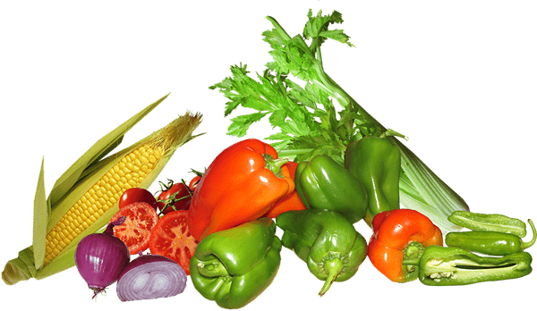

Produce can be called organic if it's certified to have grown on soil that had no prohibited substances applied for three years prior to harvest. Prohibited substances include most synthetic fertilizers and pesticides.
That's right, we only sell 100% organic produce, not 95%, not 75%, not 5%. Really and truly 100% organic.
We grow our own organically as well as source produce directly from farmer who grow it Organically
Organic farming can be defined as an agricultural process that uses biological fertilisers and pest control acquired from animal or plant waste. Organic farming was actually initiated as an answer to the environmental sufferings caused by the use of chemical pesticides and synthetic fertilisers.
Contact UsWe Provide fresh and 100% organic vegetable At a low price at Orgpick.Healthy range of farm fresh vegetables.
We Provide fresh and 100% organic Fruits At a low price at Orgpick.Healthy range of farm fresh vegetables.
In the our farm we use healthy cattle
More recently, We have started offering customers home delivery of virtually all food products.
We have develope a plan everytime regarding the our product
Our product is 100% organic
We grow our own organically as well as source produce directly from farmer who grow it Organically
Apart from Fruits n Veggies & Grains n Pulses from Karjat farm, we have many associate farmers who also grow Fruits n Veggies organically & in natural environment & provide us fresh Fruits n Veggies. THE FARMER is a link to these small organic farmers & ultimate consumers. It is a small step to join nature lover conscious people together, a firm step towards better health, chemical free food, clean & beautiful nature. THE FARMER invites people to join together and extend link to the ultimate farmer for daily needs and give our progeny chemical free Fruits n Veggies and a beautiful pollution free environment.
large manpower, capital inputs, and extensive use of equipment like winnowing machines, threshers, and harvesters.
We provide a 24*7 support to the farmer
Got to know that organically grown, naturally processed whole foods taste gourmet-style with hardly any spice. Explored how local is the new global. And more than anything, gained friends for life. Bio Basics has taught our family deep respect for the farming community and made us better foodies. Love everything about BB: from the carefully sourced pure produce to the warm, caring attention to detail of the team.
They recently had a seasonal run of avocados, which were the best I’ve had in India thus far. Even their carrots taste better than what you get in the market. They don’t always have stock of what you want, which to me, is further evidence of adherence to natural seasonal patterns without exploitation of resources.
Today large tracts of rural India are de facto organic because the people who till them are too poor to afford chemical fertilisers and pesticides. These tracts of the good earth have not yet been touched by the greed of commercial companies (and their managers) and are still pure and rich (soil wise) to grow good, healthy crops without the use of chemicals. Which is why we can still sometimes buy the most delicious and nutritious farm produce in our local markets.
© From farmer. All Rights Reserved.